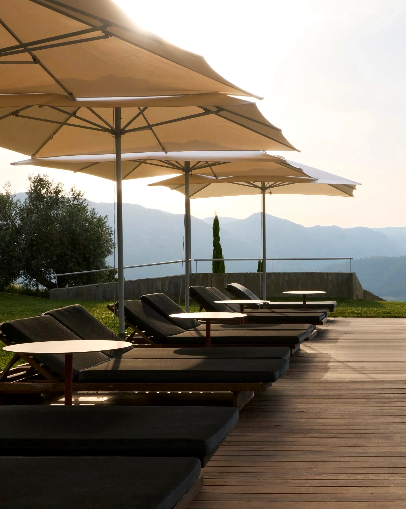
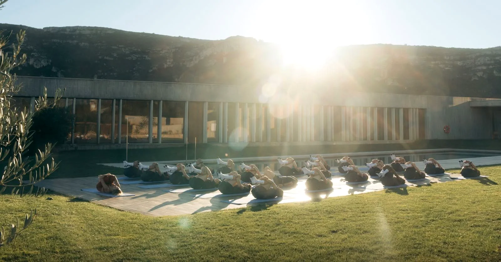
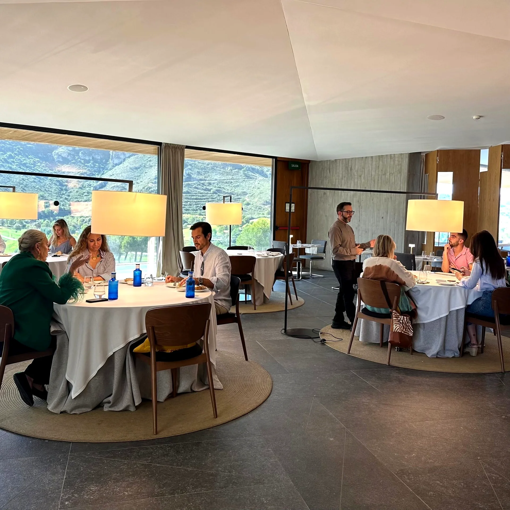
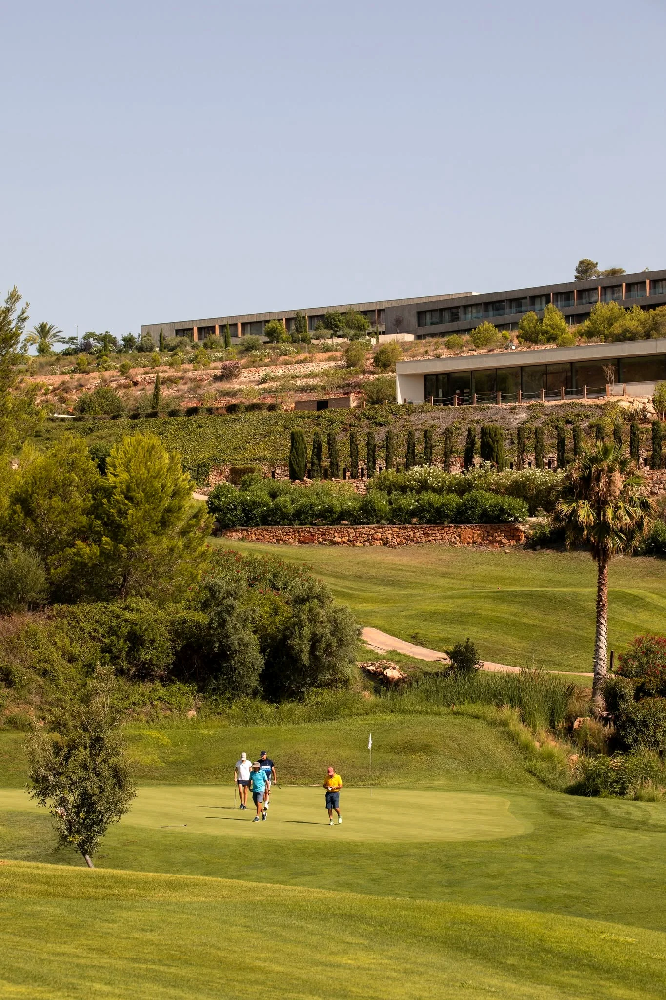
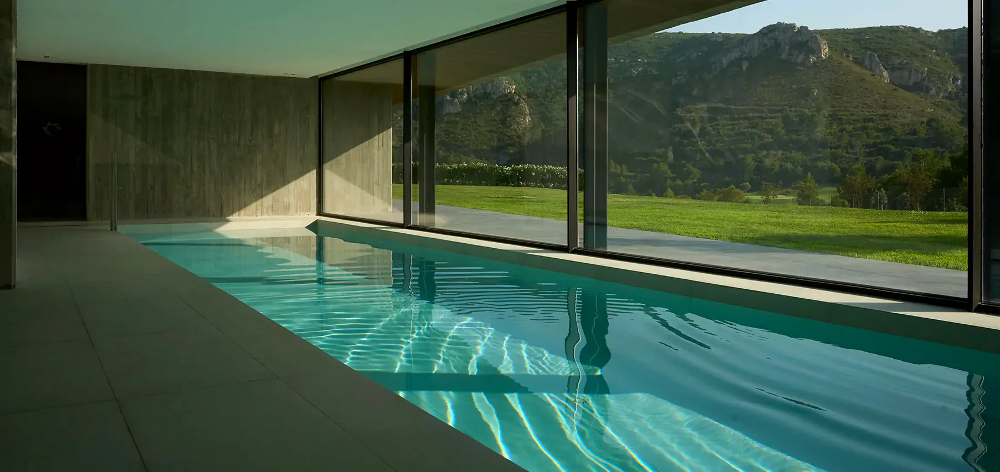
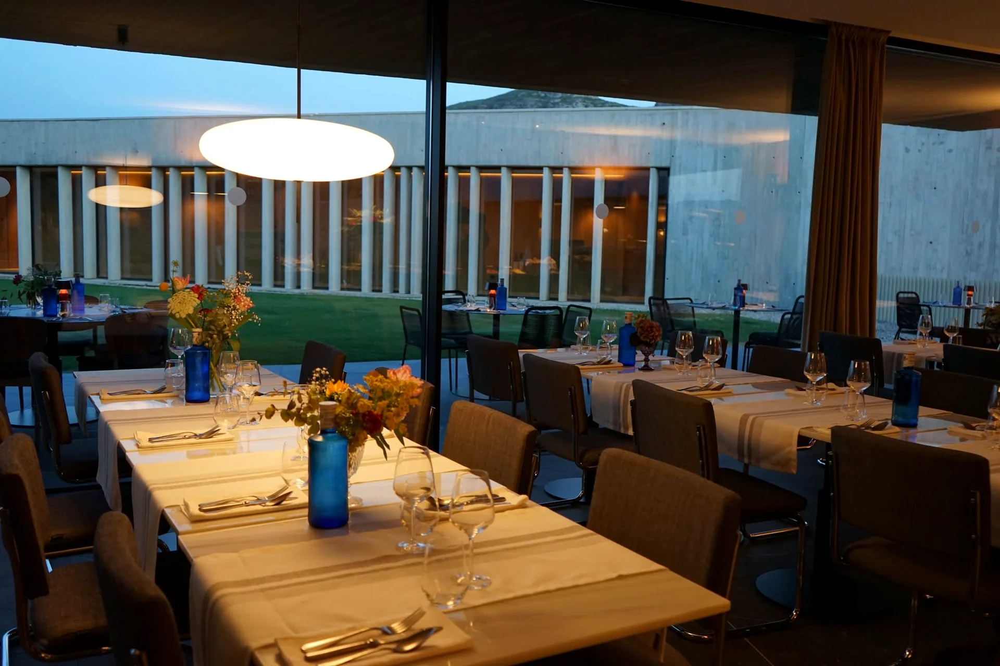

09:00
Clase de yoga
La jornada empieza al aire libre, con el sol todavía bajo y la piscina en calma: una sesión guiada para llegar con la mente despierta a todo lo que sigue.

Bienestar para tu empresa
Graba la secuencia en tiempo real y prepara un .webm para descargar.
Desplázate
Así se vivirá el día
La jornada empieza al aire libre, con el sol todavía bajo y la piscina en calma: una sesión guiada para llegar con la mente despierta a todo lo que sigue.

Una pausa frente al agua, con la sierra como fondo. Café, algo ligero y conversación, antes de que el día siga su curso.

Tiempo libre junto al agua. Sin agenda, sin prisa: solo la piscina, el sol de mediodía y el valle alrededor.

La mesa principal del día, con cocina de producto y las puertas abiertas al jardín: el momento para sentarse de verdad.
Un rato sin nada programado. Cada cual, a su manera, antes de que vuelva a empezar el ritmo.

Sobre el green, con el valle detrás y la luz ya de tarde: una clase pensada tanto para quien nunca ha cogido un palo como para quien juega cada semana.

El cuerpo se relaja antes de la cena: agua en calma, piedra y madera, y la sierra al otro lado del cristal.

Las mesas se encienden cuando cae la luz: el cierre del día, con calma y buena compañía.